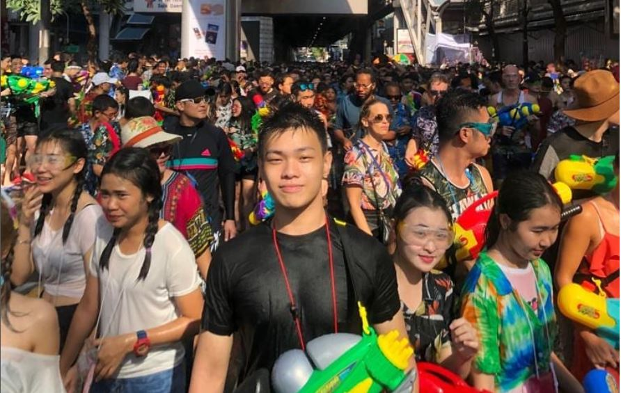

Summary
I am currently a student in the School of Computer Science and Engineering (SCSE)
of Nanyang Technological University (NTU).
I have previously completed my studies at Temasek Polytechnic
and graduated with a Diploma in Big Data Governance and Management.
My current interests are Data analytics, Automation, Big Data, Machine Learning, and Artificial Intelligence(AI).
Internship Experience
-
Deloitte Jan, 2019 - Jun, 2019
Audit Analytics -
Matsue National College of Technology Aug, 2018 - Dec, 2018
Information Engineer
Education
-
Nanyang Technological University Aug, 2021 - Present
B.E, Computer Science and Technology (Major)
B.B, Business (Minor)
-
Temasek Polytechnic Apr, 2016 - May, 2019
Diploma in Big Data Governance and Management
Pre-graduate Programme (iPREP) Recipient
Projects
Project links in progress
- Mar, 2022: Extracting Text from images using Optical Character Recognition(OCR)
- Mar, 2022: Basic Strategy Automation
- Jan, 2022: Webscraper for Stock Fundamentals
- Dec, 2021: Telegram bot to get latest eyesight test dates from CDC
- Jan, 2021: Stocks Price Prediction using LSTM Model
- Dec, 2020: Oanda FX Trading Bot
- Feb, 2020: Candlestick Pattern screener for US Market
Certifications
- Microstrategy Analyst, Feb 2022.
- NICF - Project Management Fundamentals, Oct 2017
Service
- National Science Experiment 2016 Volunteer, National Research Foundation Singapore, NRF, 2016
- Campus Care Network 2016 Helper, Campus Care Network, TP, 2016
Honors and Awards
- Finalist for MicroStrategy Datathon Challenge 2022, MicroStrategy, Mar 2022.
- Runner up for SUSS-Microsoft Analytics Hackathon 2018, Singapore University of Social Sciences, Oct 2018.
- Industry Preparation for Pre-graduate Programme (iPREP) Recipient, Info-communications Media Development Authority (IMDA), Apr 2017.
- Singapore Mathematical Modelling Forum and Challenge, Raffles Girls' School, Jul 2015.
Hobbies
I love to travel, you can find some of my overseas photos on Instagram.
